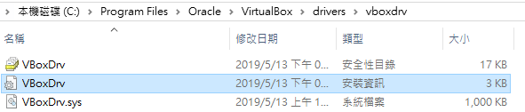
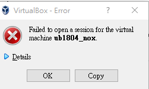
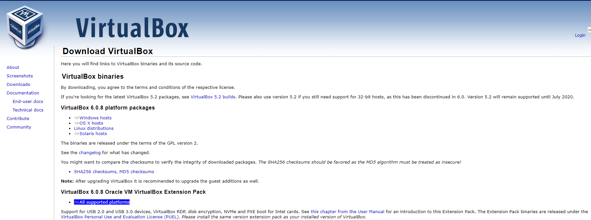
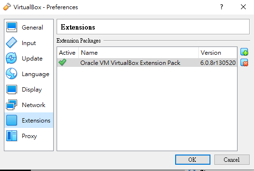

建立VirtualBox 虛擬主機運到下面問題
Cannot access the kernel driver! Make sure the kernel module has been loaded successfully.
解決辦法 :
進入VirtualBox的安裝路徑下的drivers\vboxdrv目錄中找到VboxDrv.inf右鍵點選安裝重新啟動VirtualBox即可。

問題2:

解決辦法:
到官網安裝擴展包 "All supported platforms"

完成後出現下圖即可正常啟動
